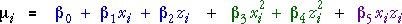

Two-level factorial experiment
We first consider a factorial experiment with two levels for each factor (coded as ±1). In this design, there are equal replications of the four factor combinations shown in the diagram below.
The resulting data allow fitting of the linear model with interaction,
However there is not enough information to assess the linearity of the factor effects or fit models with quadratic terms in X or Y.
Factorial experiment with centre points
Adding centre points to the design allows the linearity of the model to be assessed using an analysis of variance table with one degree of freedom for nonlinearity.
However although this design permits a test of whether a nonlinear model is necessary, the resulting data do not contain enough information to fit the full quadratic model,

At least six different combinations of factor levels must be used to fit a quadratic model.
Chemical process yield
In an experiment to assess how the reaction time and temperature affect the yield of a chemical process, there was a single replicate of a 22 factorial experiment (with Time set at 80 and 100 and Temperature at 140 and 150°C), augmented by four replicates of the centre point of the design. The diagram below initially shows the five factor combinations (design points) for the experiment..
Click the y-x-z rotation button to see the yields that were obtained from the experiment.
Now click the checkbox Show best model. This shows a quadratic model that passes through the mean yield at each of the five factor combinations. (These five means are displayed as black circles.)
This quadratic model is not unique — a range of quadratic models pass through these same five points. Drag the red arrow to change the quadratic model.
Data are needed from more than 5 design points to allow the shape of the response surface to be estimated.
Central composite designs
A 2k factorial design for k factors must be augmented with extra design points to allow a quadratic model to be fitted. The usual way to do this is with two additional runs for each of the k factors in which all other factors are set at their centre value and that factor takes two levels that are more extreme than those in the factorial part of the design. These extra runs are called star points for the design.
For a 2-factor design, setting these extreme values at ±1.414 (when the factorial levels are coded as ±1) and using the same number of replicates as in the factorial part of the design gives the design an important property. When the model is fitted and used to predict the response, the predictions are equally accurate in all directions around the design centre — the accuracy of the predicted reponse depends only on the distance from the centre point. (A design with this property is called rotatable.)
This design is called a central composite design. There is often only a single replicate throughout, except for the centre point of the design for which there are often 5 or 6 replicates to allow the experimental error to be estimated.
Sequential design
Sometimes an initial 22 factorial design is conducted with a few replicates of the centre point of the design. If the test for linearity indicates that there is curvature, extra runs of the experiment can be conducted at the star points to fit a response surface. If the levels used for the factorial experiment are set at the extreme factor levels that are permissible (e.g. an additive may be restricted to values between 0 and 5), then the star points of the above central composite design will be outside these limits.
One solution is to ensure that the initial factor levels for the 22 factorial design are well within the allowed values, ensuring that any subsequent star points are 'legal'. If a factor must take values between ±1, then setting the levels for the initial factorial design at ±1/1.414 will ensure that the subsequent star points will be at ±1. This does however mean that the main effects for the factors are less accurately estimated than in a 22 factorial design with factor levels at ±1.
Face-centred central composite designs
An alternative design brings the star points back to levels ±1 instead of ±1.414. This is sometimes called a face-centred central composite design. When there are only two factors, this design is identical to a full factorial design for two factors with 3 levels (plus some extra centre points).
The centre-faced design is not rotatable, so:
A standard central composite design is usually preferred unless star points are sequentially added to a 22 factorial design in which the factor levels are already at their permitted limits.